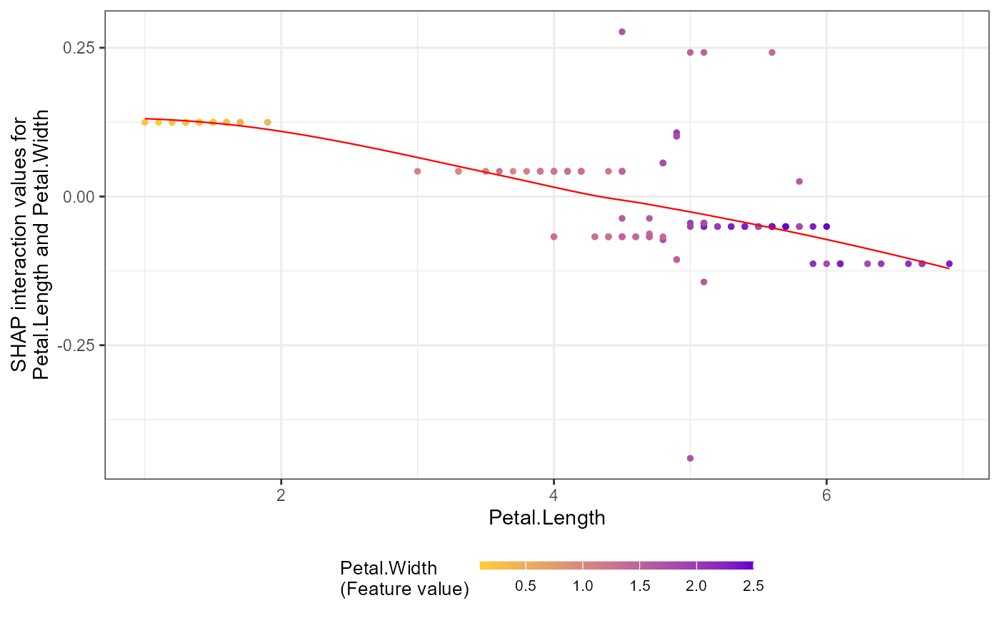

Prepare the interaction SHAP values from predict.xgb.Booster
Source:R/SHAP_funcs.R
shap.prep.interaction.RdThis is a convenience wrapper for
predict(xgb_model, X_train, predinteraction = TRUE).
See xgboost::predict.xgb.Booster for details.
Note: This functionality is only available for XGBoost models, not LightGBM.
Examples
# Example: SHAP interaction plots
# Shows how feature interactions affect predictions
X_iris = as.matrix(iris[,1:4])
y_iris = as.numeric(iris[[5]]) - 1 # Convert factor to numeric
dtrain = xgboost::xgb.DMatrix(data = X_iris, label = y_iris)
params = list(learning_rate = 1, min_split_loss = 0, reg_lambda = 0,
objective = 'reg:squarederror', nthread = 1)
mod1 = xgboost::xgb.train(params = params, data = dtrain,
nrounds = 1, verbose = 0)
# Get interaction SHAP values (two methods):
data_int <- shap.prep.interaction(xgb_model = mod1, X_train = X_iris)
# Or directly:
shap_int <- predict(mod1, X_iris, predinteraction = TRUE)
# Plot interaction effects
shap.plot.dependence(data_long = shap_long_iris,
data_int = shap_int_iris,
x="Petal.Length",
y = "Petal.Width",
color_feature = "Petal.Width")
#> `geom_smooth()` using formula = 'y ~ x'
